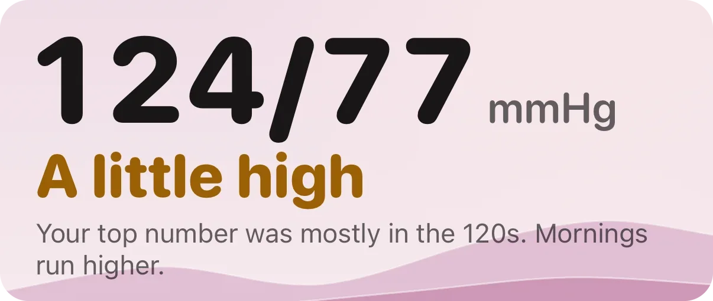
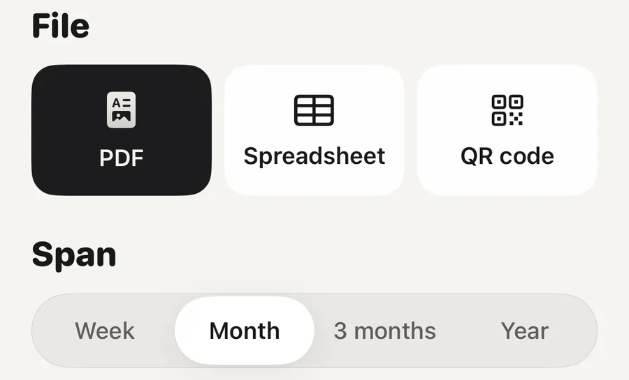

Problem · Heart

Measure twice in the morning and twice in the evening for seven days, then take the average. That is what European and American guidelines ask for before a visit. Sit quietly for five minutes first, use a validated upper-arm cuff, and keep every reading, not only the good ones. At home the line for high blood pressure is 135/85, lower than the clinic's 140/90.
The routine is nearly the same in European and American guidance (Stergiou and colleagues, 2021; Shimbo and colleagues, 2020):
Small slips add up. Talking, a full bladder, crossed legs or an arm without support can each lift a reading by several points (Muntner and colleagues, 2019).
Seven days, and at least three. With two readings each morning and evening that makes up to 28 readings. The number your doctor wants is the average of them, not the best one and not the worst one. Some guidelines leave out the first day, because first-day readings tend to run higher (Stergiou and colleagues, 2021).
The reason is simple: single readings jump. Two readings taken minutes apart often differ with nothing wrong, and a week's average is far steadier than any one of them.
The number your doctor wants is the week's average, not your best reading.
You do not need to measure every day forever. A full week before a visit is what counts. Between visits an occasional check is enough for most people, and your doctor will say how often.
The top number is the pressure while your heart beats, and the bottom number is the pressure between beats. Both are in millimetres of mercury, mmHg.
In Europe, the line for high blood pressure at home is an average of 135/85 or more, where the clinic line is 140/90 (Stergiou and colleagues, 2021). The 2025 American guideline uses lower labels: 120 to 129 on top with the bottom under 80 is called elevated, stage 1 hypertension starts at 130/80 and stage 2 at 140/90 (Jones and colleagues, 2025). Under 120/80 is normal in both.
The home lines in one picture
One reading in a higher row does not put you there. The average does. And only a doctor can say whether you have high blood pressure and what to do about it.
Many people tense up at the clinic. Among people seen in blood pressure clinics, about one in five read high only at the clinic, and about one in seven read high only at home (Stergiou and colleagues, 2021). Neither number is wrong. Your doctor uses both.
Home readings follow heart risk at least as closely as clinic readings. A pooled analysis of eight studies with 17,698 people found that home blood pressure predicted heart attacks, strokes and deaths, and still did once clinic readings were taken into account (Ward and colleagues, 2012). That is why a clean week of home readings is worth bringing.
An automatic upper-arm cuff that has passed an independent accuracy test. There is one agreed standard for these tests (Stergiou and colleagues, 2018), and lists of monitors that passed are free to read at stridebp.org and validatebp.org. Many monitors on sale have never been tested this way, so check a list before you buy.
Wrist cuffs are more sensitive to how you hold your arm and are not the first choice. Watches and rings without a cuff are not used for a log like this.
Apple Watch does not take a blood pressure reading. Its hypertension notifications are a separate feature and do not replace a cuff.
There are two ways to get readings into Apple Health. A cuff with Bluetooth saves each reading through its own app. Or you type a reading in yourself: open the Health app, tap Browse, then Heart, then Blood Pressure, then Add a Measurement.
The Health app also has its own Blood Pressure Log. Under Heart, in the Blood Pressure Log section, tap Get Started, choose seven days of morning and evening readings or four weeks of daily ones, and the iPhone reminds you when it is time. At the end you can tap Export PDF. It needs an iPhone 11 or later with the latest iOS and a cuff, and for many people it is all they need.
Whatever you use, bring the log itself and not your memory of it. Leave the odd readings in, and note anything unusual beside them, such as coffee, a short night or a missed tablet.

A report for your doctorPick the span and the file: a PDF to print or send, a spreadsheet, or a QR code your doctor can scan. The QR code holds a short text summary, and the report is not uploaded anywhere.
Aera, for iPhone and Apple Watch
Aera reads the blood pressure readings your cuff saves to Apple Health, or the ones you type into the Health app. You do not type readings into Aera. It averages your last seven days with readings and puts that average in one of four plain words on the home lines: In range, A little high, High or Very high. The word appears once you have readings on three days. Until then the screen says it is still learning.
Under the figure, a sentence says which of the two numbers puts you there and whether your mornings or your evenings run higher. You can tag a reading with what was going on, such as coffee or a short night. The report for your doctor comes as a PDF, a spreadsheet or a QR code, for a week, a month, three months or a year.
Apple's Health app can keep a log and export a PDF too. Aera adds the plain words, mornings beside evenings, the tags, the spreadsheet and the QR code. There is no account. A report of up to one month is free, and three months or a year is part of Premium.
Aera is not a medical device and does not diagnose. Only a doctor can tell you whether you have high blood pressure.
Seven days, with two readings in the morning and two in the evening, one minute apart. Three days is the least that counts. Your doctor looks at the average of all readings, and some guidelines leave out the first day.
Under 120/80 is normal. In Europe the home line for high blood pressure is an average of 135/85 or more, lower than the clinic's 140/90. The American guideline starts stage 1 hypertension at 130/80 and stage 2 at 140/90. It is the week's average that counts, not one reading.
No. Apple Watch does not take a blood pressure reading, and its hypertension notifications do not replace a cuff. For a log you need an upper-arm cuff, ideally one from a validated list. A Bluetooth cuff can save its readings to Apple Health.
In the Health app, the Blood Pressure Log lets you tap Export PDF at the end of the logging period. Apps that read Apple Health can do it too. Aera makes a report from your readings as a PDF, a spreadsheet or a QR code.
Related field notes: what a consumer watch cannot measure
Related guides: What is a normal resting heart rate? · Apple Watch HRV: what is normal? · What does a biological age from your watch mean? · Your Apple Watch flagged possible hypertension. What now?
 Or scan with your iPhone
Or scan with your iPhoneFree to start. No account. Works with the watch you already wear.